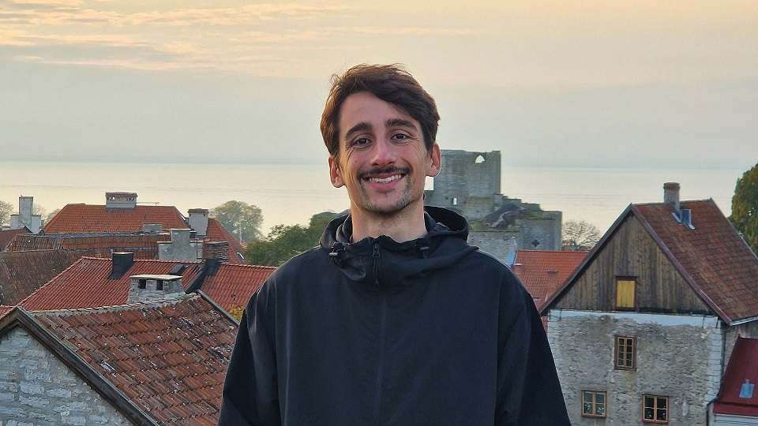

About Me
Personally
My name is Oriol Viu Duran and I'm a Junior Game Designer. I describe myself as creative, analytical, detail-oriented, easily adaptable and a good team player.
Also a narrative lover, cozy gamer, runner, vinyl collector and a bit of a geography buff!
Professionally
I'm currently looking to begin my professional career in design either around Barcelona or abroad.
I also develop small narrative-driven games in solitary under the name
North Oriole
with the intention of expressing myself and growing both as a game maker and human being.
My most notable project is
WAVA, a short cinematic 2D puzzle-platformer about self-growth and finding your place.
Even though I often work alone, I'm always looking for new opportunities to work in teams and learn from others.
Academically
On 2022 I graduated with a Bachelor's degree in Design and Development of Video Games from the Universitat de Girona.
My
Final Degree Project,
which consisted in designing and developing the prototype for
WAVA, was awarded full marks and the "Computer Field Award" at the 28th Edition of the
Premis Patronat.
A year later I attended a course in Narrative Design for Video Games from Pulse College to become a better interactive storyteller.
